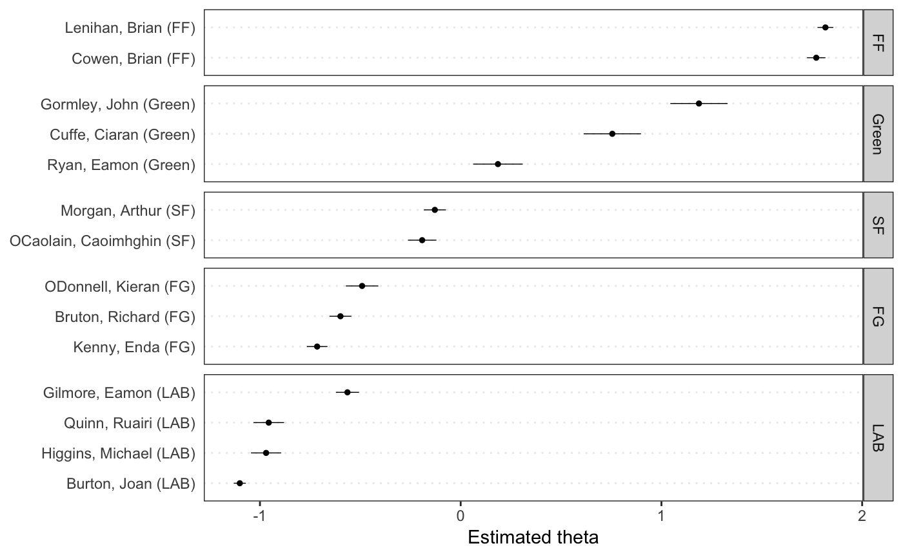

クイック・スタートガイド
quickstart_ja.Rmd本ページはQuick Start Guideの日本語訳であり，英語のテキスト分析を通じてquantedaの基本的な使い方を説明する．日本語の分析法に関しては，以下のページを参照．
パッケージのインストール
quantedaはCRANからインストールできる．GUIのRパッケージインストーラを使用してインストールするか，次のコマンドを実行する．
GitHubから最新の開発バージョンをインストールする方法については，https://github.com/quanteda/quanteda を参照．
インストールが推奨されるパッケージ
quantedaには連携して機能を拡張する一連のパッケージがあり，それらをインストールすることが推奨される．
- readtext：多くの入力形式からテキストデータをRに簡単に読み込むパッケージ
- spacyr：PythonのspaCyライブラリを使用した自然言語解析のためのパッケージで，品詞タグ付け，固有表現抽出，および係り受け関係の解析などができる
-
quanteda.corpora：quantedaの本記事内の説明で使用する追加のテキストデータ
-
LIWCalike: Linguistic Inquiry and Word Count (LIWC) アプローチによるテキスト分析のR実装
コーパスの作成
まず，quantedaを読み込んで，パッケージの関数とデータにアクセスできるようにする．
利用可能なコーパス
quantedaにはテキストを読み込むためのシンプルで強力なパッケージ，readtextがあります．このパッケージのreadtext()は，ローカス・ストレージやインターネットからファイル読み込み，corpus()にデータ・フレームを返す．
readtext()で利用可能なファイルやデータの形式:
- テキスト（
.txt）ファイル - コンマ区切り値（
.csv）ファイル - XML形式のデータ
- JSON形式のFacebook APIのデータ
- JSON形式のTwitter APIのデータ
- 一般的なJSONデータ
quantedaのコーパスを生成する関数である corpus()は，以下の種類のデータを読み込むことができる．
- 文字列ベクトル（例：readtext以外のツールを使用して読み込んだテキスト）
-
tmパッケージの
VCorpusコーパスオブジェクト - テキスト列と他の文書に対応したメタデータを含むデータ・フレーム
文字列からコーパスを作成
コーパスを作成する最も簡単な方法は，corpus()を用いて，すでにRに読み込まれた文字列ベクトル作成することである．文字列ベクトルをRに取り込む方法はさまざまなので，高度なRユーザーは，コーパスをいろいろな方法で作り出せる．
次の例では，quantedaパッケージに含まれているイギリスの政党が2010年の総選挙のために発行したマニフェストのテキストデータ（data_char_ukimmig2010）からコーパスを作成している．
## Corpus consisting of 9 documents:
##
## Text Types Tokens Sentences
## BNP 1125 3280 88
## Coalition 142 260 4
## Conservative 251 499 15
## Greens 322 679 21
## Labour 298 683 29
## LibDem 251 483 14
## PC 77 114 5
## SNP 88 134 4
## UKIP 346 723 27
##
## Source: /Users/kbenoit/Dropbox (Personal)/GitHub/quanteda/quanteda/vignettes/pkgdown/* on x86_64 by kbenoit
## Created: Mon Nov 25 08:46:51 2019
## Notes:コーパスを作成したあとでも，docvarsを用いると，必要に応じて文書に対応した変数をこのコーパスに追加することができる．
たとえば，Rのnames()関数を使って文字ベクトル（data_char_ukimmig2010）の名前を取得し，これを文書変数（docvar()）に追加することができる．
docvars(corp_uk, "Party") <- names(data_char_ukimmig2010)
docvars(corp_uk, "Year") <- 2010
summary(corp_uk)## Corpus consisting of 9 documents:
##
## Text Types Tokens Sentences Party Year
## BNP 1125 3280 88 BNP 2010
## Coalition 142 260 4 Coalition 2010
## Conservative 251 499 15 Conservative 2010
## Greens 322 679 21 Greens 2010
## Labour 298 683 29 Labour 2010
## LibDem 251 483 14 LibDem 2010
## PC 77 114 5 PC 2010
## SNP 88 134 4 SNP 2010
## UKIP 346 723 27 UKIP 2010
##
## Source: /Users/kbenoit/Dropbox (Personal)/GitHub/quanteda/quanteda/vignettes/pkgdown/* on x86_64 by kbenoit
## Created: Mon Nov 25 08:46:51 2019
## Notes:分析の対象となる文書変数ではではないけれども，文書の属性として残しておきたいと思うメタデータも，docvars()を使って，コーパスに追加することができる．
metadoc(corp_uk, "language") <- "english"
metadoc(corp_uk, "docsource") <- paste("data_char_ukimmig2010", 1:ndoc(corp_uk), sep = "_")
summary(corp_uk, showmeta = TRUE)## Corpus consisting of 9 documents:
##
## Text Types Tokens Sentences _language _docsource
## BNP 1125 3280 88 english data_char_ukimmig2010_1
## Coalition 142 260 4 english data_char_ukimmig2010_2
## Conservative 251 499 15 english data_char_ukimmig2010_3
## Greens 322 679 21 english data_char_ukimmig2010_4
## Labour 298 683 29 english data_char_ukimmig2010_5
## LibDem 251 483 14 english data_char_ukimmig2010_6
## PC 77 114 5 english data_char_ukimmig2010_7
## SNP 88 134 4 english data_char_ukimmig2010_8
## UKIP 346 723 27 english data_char_ukimmig2010_9
## Party Year
## BNP 2010
## Coalition 2010
## Conservative 2010
## Greens 2010
## Labour 2010
## LibDem 2010
## PC 2010
## SNP 2010
## UKIP 2010
##
## Source: /Users/kbenoit/Dropbox (Personal)/GitHub/quanteda/quanteda/vignettes/pkgdown/* on x86_64 by kbenoit
## Created: Mon Nov 25 08:46:51 2019
## Notes:metadoc()を用いると，文書メタデータのフィールドを自由に定義することができますが，単一の値（“english”）を文書変数（“language”）に付与するときには，Rが値を繰り替えして全ての文書に同じ値を付与していることに注意する必要がある．
独自の文書メタデータのフィールド（docsource）を作成するために，quantedaの関数であるndoc()を使ってコーパスに含まれる文書の総数を取得している．ndoc()は，nrow()やncol()などのRの標準の関数と同じような方法で動作するように設計されている．
readtextパッケージを用いたファイルの読み込み
require(readtext)
# Twitter json
dat_json <- readtext("~/Dropbox/QUANTESS/social media/zombies/tweets.json")
corp_twitter <- corpus(dat_json)
summary(corp_twitter, 5)
# generic json - needs a textfield specifier
dat_sotu <- readtext("~/Dropbox/QUANTESS/Manuscripts/collocations/Corpora/sotu/sotu.json",
textfield = "text")
summary(corpus(dat_sotu), 5)
# text file
dat_txtone <- readtext("~/Dropbox/QUANTESS/corpora/project_gutenberg/pg2701.txt", cache = FALSE)
summary(corpus(dat_txtone), 5)
# multiple text files
dat_txtmultiple1 <- readtext("~/Dropbox/QUANTESS/corpora/inaugural/*.txt", cache = FALSE)
summary(corpus(dat_txtmultiple1), 5)
# multiple text files with docvars from filenames
dat_txtmultiple2 <- readtext("~/Dropbox/QUANTESS/corpora/inaugural/*.txt",
docvarsfrom = "filenames", sep = "-",
docvarnames = c("Year", "President"))
summary(corpus(dat_txtmultiple2), 5)
# XML data
dat_xml <- readtext("~/Dropbox/QUANTESS/quanteda_working_files/xmlData/plant_catalog.xml",
textfield = "COMMON")
summary(corpus(dat_xml), 5)
# csv file
write.csv(data.frame(inaug_speech = texts(data_corpus_inaugural),
docvars(data_corpus_inaugural)),
file = "/tmp/inaug_texts.csv", row.names = FALSE)
dat_csv <- readtext("/tmp/inaug_texts.csv", textfield = "inaug_speech")
summary(corpus(dat_csv), 5)コーパスオブジェクトの使い方
コーパスの原理
quantedaのコーパスは，元の文書をユニコード（UTF-8）に変換し，文書に対するメタデータと一緒に格納しすることで、ステミングや句読点の削除などの処理よって変更されないテキストデータの静的な保管庫になるように設計されている．これによって，コーパスから文書を抽出して新しいオブジェクトを作成した後でも，コーパスには元のデータが残り，別の分析を，同じコーパスを用いて行うことができる．
コーパスから文書を取り出すためには，texts()と呼ばれる関数を使用する．
## 1793-Washington
## "Fellow citizens, I am again called upon by the voice of my country to execute the functions of its Chief Magistrate. When the occasion proper for it shall arrive, I shall endeavor to express the high sense I entertain of this distinguished honor, and of the confidence which has been reposed in me by the people of united America.\n\nPrevious to the execution of any official act of the President the Constitution requires an oath of office. This oath I am now about to take, and in your presence: That if it shall be found during my administration of the Government I have in any instance violated willingly or knowingly the injunctions thereof, I may (besides incurring constitutional punishment) be subject to the upbraidings of all who are now witnesses of the present solemn ceremony.\n\n "summary()により，コーパス内のテキストの要約を行うことができる．
## Corpus consisting of 14 documents:
##
## Text Types Tokens Sentences year debate number foren
## Lenihan, Brian (FF) 1953 8641 374 2010 BUDGET 01 Brian
## Bruton, Richard (FG) 1040 4446 217 2010 BUDGET 02 Richard
## Burton, Joan (LAB) 1624 6393 307 2010 BUDGET 03 Joan
## Morgan, Arthur (SF) 1595 7107 343 2010 BUDGET 04 Arthur
## Cowen, Brian (FF) 1629 6599 250 2010 BUDGET 05 Brian
## Kenny, Enda (FG) 1148 4232 153 2010 BUDGET 06 Enda
## ODonnell, Kieran (FG) 678 2297 133 2010 BUDGET 07 Kieran
## Gilmore, Eamon (LAB) 1181 4177 201 2010 BUDGET 08 Eamon
## Higgins, Michael (LAB) 488 1286 44 2010 BUDGET 09 Michael
## Quinn, Ruairi (LAB) 439 1284 59 2010 BUDGET 10 Ruairi
## Gormley, John (Green) 401 1030 49 2010 BUDGET 11 John
## Ryan, Eamon (Green) 510 1643 90 2010 BUDGET 12 Eamon
## Cuffe, Ciaran (Green) 442 1240 45 2010 BUDGET 13 Ciaran
## OCaolain, Caoimhghin (SF) 1188 4044 176 2010 BUDGET 14 Caoimhghin
## name party
## Lenihan FF
## Bruton FG
## Burton LAB
## Morgan SF
## Cowen FF
## Kenny FG
## ODonnell FG
## Gilmore LAB
## Higgins LAB
## Quinn LAB
## Gormley Green
## Ryan Green
## Cuffe Green
## OCaolain SF
##
## Source: /Users/kbenoit/Dropbox (Personal)/GitHub/quanteda/* on x86_64 by kbenoit
## Created: Wed Jun 28 22:04:18 2017
## Notes:summary()の出力をデータ・フレームとして保存し，基本的な記述統計を描画することができる．
tokeninfo <- summary(data_corpus_inaugural)
if (require(ggplot2))
ggplot(data = tokeninfo, aes(x = Year, y = Tokens, group = 1)) +
geom_line() +
geom_point() +
scale_x_continuous(labels = c(seq(1789, 2017, 12)), breaks = seq(1789, 2017, 12)) +
theme_bw()## Loading required package: ggplot2
## Text Types Tokens Sentences Year President FirstName
## 14 1841-Harrison 1896 9144 210 1841 Harrison William Henryコーパスに対する操作
コーパスの結合
+演算子を用いると，簡単に二個のコーパスを連結できます．コーパスが異なる構造を持つ場合でも，文書変数が失われることはなく，コーパスのメタデータも引き継がれる．
library(quanteda)
corp1 <- corpus(data_corpus_inaugural[1:5])
corp2 <- corpus(data_corpus_inaugural[53:58])
corp3 <- corp1 + corp2
summary(corp3)## Corpus consisting of 11 documents:
##
## Text Types Tokens Sentences
## 1789-Washington 625 1538 23
## 1793-Washington 96 147 4
## 1797-Adams 826 2578 37
## 1801-Jefferson 717 1927 41
## 1805-Jefferson 804 2381 45
## 1997-Clinton 773 2449 111
## 2001-Bush 621 1808 97
## 2005-Bush 773 2319 100
## 2009-Obama 938 2711 110
## 2013-Obama 814 2317 88
## 2017-Trump 582 1660 88
##
## Source: Combination of corpuses corp1 and corp2
## Created: Mon Nov 25 08:46:52 2019
## Notes:コーパスから文書を抽出
corpus_subset()により，文書変数に適用される論理条件に基づいて文書を抽出することができる．
## Corpus consisting of 7 documents:
##
## Text Types Tokens Sentences Year President FirstName
## 1993-Clinton 642 1833 81 1993 Clinton Bill
## 1997-Clinton 773 2449 111 1997 Clinton Bill
## 2001-Bush 621 1808 97 2001 Bush George W.
## 2005-Bush 773 2319 100 2005 Bush George W.
## 2009-Obama 938 2711 110 2009 Obama Barack
## 2013-Obama 814 2317 88 2013 Obama Barack
## 2017-Trump 582 1660 88 2017 Trump Donald J.
##
## Source: Gerhard Peters and John T. Woolley. The American Presidency Project.
## Created: Tue Jun 13 14:51:47 2017
## Notes: http://www.presidency.ucsb.edu/inaugurals.php## Corpus consisting of 2 documents:
##
## Text Types Tokens Sentences Year President FirstName
## 1797-Adams 826 2578 37 1797 Adams John
## 1825-Adams 1003 3152 74 1825 Adams John Quincy
##
## Source: Gerhard Peters and John T. Woolley. The American Presidency Project.
## Created: Tue Jun 13 14:51:47 2017
## Notes: http://www.presidency.ucsb.edu/inaugurals.phpコーパス内の文書の探索
kwic()（keywords-in-context）は単語の検索を行い，その単語が現れる文脈を表示する．
##
## [1797-Adams, 1325] fraud or violence, by | terror |
## [1933-Roosevelt, 112] nameless, unreasoning, unjustified | terror |
## [1941-Roosevelt, 287] seemed frozen by a fatalistic | terror |
## [1961-Kennedy, 866] alter that uncertain balance of | terror |
## [1981-Reagan, 813] freeing all Americans from the | terror |
## [1997-Clinton, 1055] They fuel the fanaticism of | terror |
## [1997-Clinton, 1655] maintain a strong defense against | terror |
## [2009-Obama, 1632] advance their aims by inducing | terror |
##
## , intrigue, or venality
## which paralyzes needed efforts to
## , we proved that this
## that stays the hand of
## of runaway living costs.
## . And they torment the
## and destruction. Our children
## and slaughtering innocents, we##
## [1797-Adams, 1325] fraud or violence, by | terror |
## [1933-Roosevelt, 112] nameless, unreasoning, unjustified | terror |
## [1941-Roosevelt, 287] seemed frozen by a fatalistic | terror |
## [1961-Kennedy, 866] alter that uncertain balance of | terror |
## [1961-Kennedy, 990] of science instead of its | terrors |
## [1981-Reagan, 813] freeing all Americans from the | terror |
## [1981-Reagan, 2196] understood by those who practice | terrorism |
## [1997-Clinton, 1055] They fuel the fanaticism of | terror |
## [1997-Clinton, 1655] maintain a strong defense against | terror |
## [2009-Obama, 1632] advance their aims by inducing | terror |
## [2017-Trump, 1117] civilized world against radical Islamic | terrorism |
##
## , intrigue, or venality
## which paralyzes needed efforts to
## , we proved that this
## that stays the hand of
## . Together let us explore
## of runaway living costs.
## and prey upon their neighbors
## . And they torment the
## and destruction. Our children
## and slaughtering innocents, we
## , which we will eradicate##
## [1949-Truman, 834] the actions resulting from the | Communist |
## [1961-Kennedy, 519] -- not because the | Communists |
##
## philosophy are a threat to
## may be doing it,上記の要約では，“Year”と“President”は各文書に結び付けられた変数であり，docvars()によってそれらにアクセスできる．
## Year President FirstName
## 1789-Washington 1789 Washington George
## 1793-Washington 1793 Washington George
## 1797-Adams 1797 Adams John
## 1801-Jefferson 1801 Jefferson Thomas
## 1805-Jefferson 1805 Jefferson Thomas
## 1809-Madison 1809 Madison Jamesquanteda.corporaをインストールすることで，より多くのコーパスを試すことができる．
コーパスから特長を抽出
文書のスケーリングなどの統計分析を行うためには，それぞれの文書の特長をまとめた行列を作成する必要があり，quantedaでは，このような行列を生成するために dfm()を使いる． dfmはdocument-feature matrixの略で，行が文書（document），列が特長（feature）となる行列である．行と列をこのように定義する理由は，データ分析では行が分析単位になり，各列が分析対象になる変数となるのが一般的だからである．多くのソフトウェアでは，この行列をdocument-term matrixと呼ぶが，quantedaが語（term）でなはく特長（feature）という用語を使うのは，特長のほうが一般性を持つからで，テキスト分析では，単語，語幹，単語の集合，Nグラム，品詞など様々なものが文書の特長となる．
文書のトークン化
テキストを簡単にトークン化するために，quantedaは tokens()と呼ばれる強力なコマンドを提供する．この関数は，文字ベクトルのトークンのリストからなるオブジェクトを生成する．このオブジェクトでは，リストの一つ一つの要素は入力された文書に対応している．
tokens()は保守的に設計されており、ユーザーが明示的に指示を与えないかぎりは，要素を削除しない．
txt <- c(text1 = "This is $10 in 999 different ways,\n up and down; left and right!",
text2 = "@kenbenoit working: on #quanteda 2day\t4ever, http://textasdata.com?page=123.")
tokens(txt)## tokens from 2 documents.
## text1 :
## [1] "This" "is" "$" "10" "in" "999"
## [7] "different" "ways" "," "up" "and" "down"
## [13] ";" "left" "and" "right" "!"
##
## text2 :
## [1] "@kenbenoit" "working" ":" "on"
## [5] "#quanteda" "2day" "4ever" ","
## [9] "http" ":" "/" "/"
## [13] "textasdata.com" "?" "page" "="
## [17] "123" "."## tokens from 2 documents.
## text1 :
## [1] "This" "is" "in" "different" "ways" "up"
## [7] "and" "down" "left" "and" "right"
##
## text2 :
## [1] "@kenbenoit" "working" "on" "#quanteda"
## [5] "2day" "4ever" "http" "textasdata.com"
## [9] "page"## tokens from 2 documents.
## text1 :
## [1] "This" "is" "10" "in" "999" "different"
## [7] "ways" "up" "and" "down" "left" "and"
## [13] "right"
##
## text2 :
## [1] "@kenbenoit" "working" "on" "#quanteda"
## [5] "2day" "4ever" "http" "textasdata.com"
## [9] "page" "123"## tokens from 2 documents.
## text1 :
## [1] "This" "is" "$" "in" "different" "ways"
## [7] "," "up" "and" "down" ";" "left"
## [13] "and" "right" "!"
##
## text2 :
## [1] "@kenbenoit" "working" ":" "on"
## [5] "#quanteda" "2day" "4ever" ","
## [9] "http" ":" "/" "/"
## [13] "textasdata.com" "?" "page" "="
## [17] "."## tokens from 2 documents.
## text1 :
## [1] "This" "is" "$" "10" "in" "999"
## [7] "different" "ways" "," "up" "and" "down"
## [13] ";" "left" "and" "right" "!"
##
## text2 :
## [1] "@kenbenoit" "working" ":" "on"
## [5] "#quanteda" "2day" "4ever" ","
## [9] "http" ":" "/" "/"
## [13] "textasdata.com" "?" "page" "="
## [17] "123" "."## tokens from 2 documents.
## text1 :
## [1] "This" " " "is" " " "$" "10"
## [7] " " "in" " " "999" " " "different"
## [13] " " "ways" "," "\n" " " "up"
## [19] " " "and" " " "down" ";" " "
## [25] "left" " " "and" " " "right" "!"
##
## text2 :
## [1] "@kenbenoit" " " "working" ":"
## [5] " " "on" " " "#quanteda"
## [9] " " "2day" "\t" "4ever"
## [13] "," " " "http" ":"
## [17] "/" "/" "textasdata.com" "?"
## [21] "page" "=" "123" "."また，tokens()には個々の文字をトークン化するオプションもある．
## tokens from 1 document.
## text1 :
## [1] "G" "r" "e" "a" "t" "w" "e" "b" "s" "i" "t" "e" ":" "h" "t" "t" "p" ":" "/"
## [20] "/" "t" "e" "x" "t" "a" "s" "d" "a" "t" "a" "." "c" "o" "m" "?" "p" "a" "g"
## [39] "e" "=" "1" "2" "3" "."tokens("Great website: http://textasdata.com?page=123.", what = "character",
remove_separators = FALSE)## tokens from 1 document.
## text1 :
## [1] "G" "r" "e" "a" "t" " " "w" "e" "b" "s" "i" "t" "e" ":" " " "h" "t" "t" "p"
## [20] ":" "/" "/" "t" "e" "x" "t" "a" "s" "d" "a" "t" "a" "." "c" "o" "m" "?" "p"
## [39] "a" "g" "e" "=" "1" "2" "3" "."もしくは，一文ごとにトークン化するオプションもある．
# sentence level
tokens(c("Kurt Vongeut said; only assholes use semi-colons.",
"Today is Thursday in Canberra: It is yesterday in London.",
"En el caso de que no puedas ir con ellos, ¿quieres ir con nosotros?"),
what = "sentence")## tokens from 3 documents.
## text1 :
## [1] "Kurt Vongeut said; only assholes use semi-colons."
##
## text2 :
## [1] "Today is Thursday in Canberra: It is yesterday in London."
##
## text3 :
## [1] "En el caso de que no puedas ir con ellos, ¿quieres ir con nosotros?"文書行列の作成
データからすぐに文書行列を作成したい場合は、dfm()に直接文字列ベクトルもしくはコーパスを渡すと、自動的にトークン化が行われ。dfm()は、デフォルトで大文字から小文字への置換や，句読点を除去などの操作を適用する．また，dfm()からtokens()の全てのオプションを利用できる．
corp_inaug_post1990 <- corpus_subset(data_corpus_inaugural, Year > 1990)
# make a dfm
dfmat_inaug_post1990 <- dfm(corp_inaug_post1990)
dfmat_inaug_post1990[, 1:5]## Document-feature matrix of: 7 documents, 5 features (0.0% sparse).
## 7 x 5 sparse Matrix of class "dfm"
## features
## docs my fellow citizens , today
## 1993-Clinton 7 5 2 139 10
## 1997-Clinton 6 7 7 131 5
## 2001-Bush 3 1 9 110 2
## 2005-Bush 2 3 6 120 3
## 2009-Obama 2 1 1 130 6
## 2013-Obama 3 3 6 99 4
## 2017-Trump 1 1 4 96 4以下の例ではdfm()の追加のオプションを用いて、ストップワードの削除（remove）と語のステミング（stem）を行っている．
# make a dfm, removing stopwords and applying stemming
dfmat_inaug_post1990 <- dfm(dfmat_inaug_post1990,
remove = stopwords("english"),
stem = TRUE, remove_punct = TRUE)## Warning: Argument remove_punct not used.## Document-feature matrix of: 7 documents, 5 features (2.86% sparse).
## 7 x 5 sparse Matrix of class "dfm"
## features
## docs fellow citizen , today celebr
## 1993-Clinton 5 2 139 10 4
## 1997-Clinton 7 8 131 6 1
## 2001-Bush 1 10 110 2 0
## 2005-Bush 3 7 120 3 2
## 2009-Obama 1 1 130 6 2
## 2013-Obama 3 8 99 6 1
## 2017-Trump 1 4 96 5 3removeによって，文書行列から除外するトークンを指定する．stopwords()は，幾つかの言語で定義されたストップワードのリストを返す．
## [1] "i" "me" "my" "myself" "we"
## [6] "our" "ours" "ourselves" "you" "your"
## [11] "yours" "yourself" "yourselves" "he" "him"
## [16] "his" "himself" "she" "her" "hers"## [1] "и" "в" "во" "не" "что" "он" "на" "я" "с" "со"## [1] "فى" "في" "كل" "لم" "لن" "له" "من" "هو" "هي" "قوة"文書行列の表示
RStudioの“Environment”パネル，またはRのView()を用いることで，dfmに格納された値を見ることができる．
## Document-feature matrix of: 9 documents, 1,547 features (83.8% sparse).頻度が最も高い特長を見るには，topfeatures()を用いる．
## immigration british people asylum britain uk
## 66 37 35 29 28 27
## system population country new immigrants ensure
## 27 21 20 19 17 17
## shall citizenship social national bnp illegal
## 17 16 14 14 13 13
## work percent
## 13 12dfmをtextplot_wordcloud()に渡すことで，ワードクラウドを描画できる．この関数は，オブジェクトや引数をwordcloudパッケージのwordcloud()に渡すので，ワードクラウドの表示を変更できる．
set.seed(100)
textplot_wordcloud(dfmat_uk, min_count = 6, random_order = FALSE,
rotation = .25,
color = RColorBrewer::brewer.pal(8, "Dark2"))
変数による文書のグループ化
quantedaでは，dfmを作成する際に，文書変数の値によって文書をグループ化するすることができる．
dfmat_ire <- dfm(data_corpus_irishbudget2010, groups = "party",
remove = stopwords("english"), remove_punct = TRUE)また、以下のように，dfmを語の頻度順に並べ替えて，中身を確かめられる．
## Document-feature matrix of: 5 documents, 10 features (0.0% sparse).
## 5 x 10 sparse Matrix of class "dfm"
## features
## docs people budget government public minister tax economy pay jobs billion
## FF 23 44 47 65 11 60 37 41 41 32
## FG 78 71 61 47 62 11 20 29 17 21
## Green 15 26 19 4 4 11 16 4 15 3
## LAB 69 66 36 32 54 47 37 24 20 34
## SF 81 53 73 31 39 34 50 24 27 29辞書による語のグループ化
キーワードがあらかじめ分かっている場合，dictionary()によって辞書を作成し、語の出現回数を測定できる。次の例では，テロリズムに関連する言葉や経済に関連する言葉が，クリントン以降の大統領演説でどのように異なるかを示している．
テロリズムと経済という2つのリストからなる辞書を作成する．
dict <- dictionary(list(terror = c("terrorism", "terrorists", "threat"),
economy = c("jobs", "business", "grow", "work")))文書行列を作成するときに，この辞書をdfm()のdictionaryに渡す．
## Document-feature matrix of: 7 documents, 2 features (14.3% sparse).
## 7 x 2 sparse Matrix of class "dfm"
## features
## docs terror economy
## 1993-Clinton 0 8
## 1997-Clinton 1 8
## 2001-Bush 0 4
## 2005-Bush 1 6
## 2009-Obama 1 10
## 2013-Obama 1 6
## 2017-Trump 1 5dictionary()は，LIWCやWordstatなどの一般的な辞書ファイルを読み込むことができる．以下では，LIWCの辞書を大統領就任演説に適用している．
追加の事例
文書の類似性
dfmat_inaug_post1980 <- dfm(corpus_subset(data_corpus_inaugural, Year > 1980),
remove = stopwords("english"), stem = TRUE, remove_punct = TRUE)
tstat_obama <- textstat_simil(dfmat_inaug_post1980,
dfmat_inaug_post1980[c("2009-Obama", "2013-Obama"), ],
margin = "documents", method = "cosine")
tstat_obama## textstat_simil object; method = "cosine"
## 2009-Obama 2013-Obama
## 1981-Reagan 0.623 0.638
## 1985-Reagan 0.643 0.663
## 1989-Bush 0.625 0.578
## 1993-Clinton 0.628 0.627
## 1997-Clinton 0.659 0.647
## 2001-Bush 0.602 0.619
## 2005-Bush 0.527 0.587
## 2009-Obama 1.000 0.682
## 2013-Obama 0.682 1.000
## 2017-Trump 0.519 0.516上記の文書間の類似性から樹形図を作成して，大統領を階層的に分類することができる．
data_corpus_sotu <- readRDS(url("https://quanteda.org/data/data_corpus_sotu.rds"))
dfmat_sotu <- dfm(corpus_subset(data_corpus_sotu, Date > as.Date("1980-01-01")),
stem = TRUE, remove_punct = TRUE,
remove = stopwords("english"))
dfmat_sotu <- dfm_trim(dfmat_sotu, min_termfreq = 5, min_docfreq = 3)
# hierarchical clustering - get distances on normalized dfm
tstat_dist <- textstat_dist(dfm_weight(dfmat_sotu, scheme = "prop"))
# hiarchical clustering the distance object
pres_cluster <- hclust(as.dist(tstat_dist))
# label with document names
pres_cluster$labels <- docnames(dfmat_sotu)
# plot as a dendrogram
plot(pres_cluster, xlab = "", sub = "",
main = "Euclidean Distance on Normalized Token Frequency")
文書間と同様に用語間の類似性も測定できる．
tstat_sim <- textstat_simil(dfmat_sotu, dfmat_sotu[, c("fair", "health", "terror")],
method = "cosine", margin = "features")
lapply(as.list(tstat_sim), head, 10)## $fair
## time better far strategi lower us long one
## 0.8266617 0.8135324 0.8036487 0.8002557 0.7995066 0.7992766 0.7977770 0.7949795
## practic american
## 0.7944127 0.7892432
##
## $health
## system issu privat need expand support reform hous
## 0.9232094 0.9229859 0.9175231 0.9143293 0.9118901 0.9072374 0.9057456 0.9054303
## dramat mani
## 0.9051588 0.9045851
##
## $terror
## terrorist coalit cheney evil homeland 11th sudden regim
## 0.8539894 0.8179609 0.8175618 0.7949619 0.7878223 0.7603221 0.7556575 0.7533021
## septemb tyranni
## 0.7502925 0.7383253文書のスケーリング
quantedaには多数のテキスト分析のためのモデルが含まれている．ここでは，ワードフィッシュ（textmodel_wordfish()）による教師なしの文書のスケーリングを2010年のアイルランドの予算討論の分析に用いている．
dfmat_ire <- dfm(data_corpus_irishbudget2010)
tmod_wf <- textmodel_wordfish(dfmat_ire, dir = c(2, 1))
# plot the Wordfish estimates by party
textplot_scale1d(tmod_wf, groups = docvars(dfmat_ire, "party"))
トピックモデル
convert()を用いると，dfmをtopicmodelsのLDA()形式のデータに転換し，簡単にトピックモデルを適用できる．
dfmat_ire2 <- dfm(data_corpus_irishbudget2010,
remove_punct = TRUE, remove_numbers = TRUE, remove = stopwords("english"))
dfmat_ire2 <- dfm_trim(dfmat_ire2, min_termfreq = 4, max_docfreq = 10)
dfmat_ire2## Document-feature matrix of: 14 documents, 1,263 features (64.5% sparse).set.seed(100)
if (require(topicmodels)) {
my_lda_fit20 <- LDA(convert(dfmat_ire2, to = "topicmodels"), k = 20)
get_terms(my_lda_fit20, 5)
}## Loading required package: topicmodels## Topic 1 Topic 2 Topic 3 Topic 4 Topic 5
## [1,] "system" "system" "support" "taoiseach" "alternative"
## [2,] "per" "welfare" "welfare" "employees" "citizenship"
## [3,] "review" "pre-budget" "investment" "rate" "wealth"
## [4,] "want" "workers" "continue" "debate" "adjustment"
## [5,] "changes" "deficit" "confidence" "referred" "breaks"
## Topic 6 Topic 7 Topic 8 Topic 9 Topic 10
## [1,] "society" "failed" "fianna" "levy" "welfare"
## [2,] "enterprising" "strategy" "fáil" "million" "taxation"
## [3,] "create" "needed" "education" "carbon" "system"
## [4,] "kind" "ministers" "know" "change" "government's"
## [5,] "sense" "system" "societies" "welfare" "fianna"
## Topic 11 Topic 12 Topic 13 Topic 14 Topic 15 Topic 16
## [1,] "set" "million" "side" "care" "child" "taoiseach"
## [2,] "taoiseach" "rates" "level" "welfare" "benefit" "fine"
## [3,] "welfare" "particularly" "third" "per" "day" "gael"
## [4,] "irish" "back" "screwed" "allowance" "today" "may"
## [5,] "fáil" "create" "never" "hit" "bank" "irish"
## Topic 17 Topic 18 Topic 19 Topic 20
## [1,] "fianna" "taoiseach" "million" "fianna"
## [2,] "fáil" "days" "measures" "fáil"
## [3,] "national" "per" "scheme" "rates"
## [4,] "irish" "use" "spending" "welfare"
## [5,] "support" "businesses" "investment" "deficit"